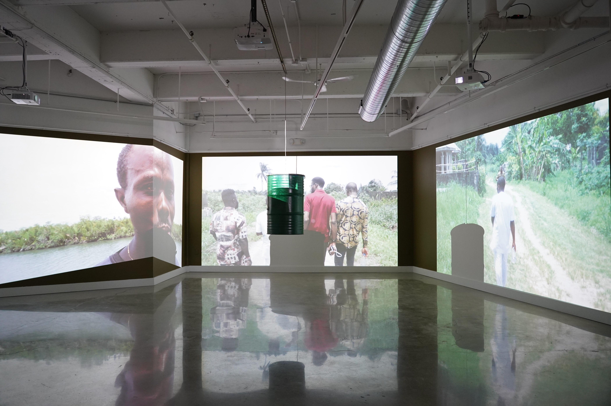

I traveled to the Niger Delta in Nigeria to capture live-action footage of the devastating impact of oil extraction on local communities.
This footage was later transformed into an installation at the Buffalo Arts Studio. Central to the installation was a 55-gallon oil drum suspended from the ceiling, equipped with a transducer that converted it into a sound object. Accompanying the oil drum were projections displaying the captured footage from the region.
The installation aimed to highlight the environmental and social crises faced by the local Indigenous communities, fostering awareness and encouraging solutions to their plight.
Fueling Change (2024)
